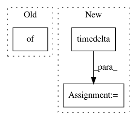

61228f3243eaee39cba31a9abd2afc6ead9612a8,implementations/bicyclegan/bicyclegan.py,,,#,136
Before Change
logger.log({"loss_D_VAE": loss_D_VAE, "loss_D_LR": loss_D_LR,
"loss_G": loss_GE, "loss_pixel": loss_pixel, "loss_latent": loss_latent},
images={"real_B": real_B, "fake_B": fake_B, "real_A": real_A},
epoch=epoch, batch=i)
// Update learning rates
After Change
// Determine approximate time left
batches_done = epoch * len(dataloader) + i
batches_left = opt.n_epochs * len(dataloader) - batches_done
time_left = datetime.timedelta(seconds=batches_left * (time.time() - start_time)/ (batches_done + 1))
// Print log
sys.stdout.write("\r[Epoch %d/%d] [Batch %d/%d] [D VAE_loss: %f, LR_loss: %f] [G loss: %f, pixel: %f, latent: %f] ETA: %s" %
(epoch, opt.n_epochs,
In pattern: SUPERPATTERN
Frequency: 4
Non-data size: 3
Instances
Project Name: eriklindernoren/PyTorch-GAN
Commit Name: 61228f3243eaee39cba31a9abd2afc6ead9612a8
Time: 2018-05-04
Author: eriklindernoren@gmail.com
File Name: implementations/bicyclegan/bicyclegan.py
Class Name:
Method Name:
Project Name: home-assistant/home-assistant
Commit Name: 24c7c2aa6e5c1e87f983167450084bb180559281
Time: 2019-03-27
Author: gido@hakvoort.it
File Name: homeassistant/components/solaredge/sensor.py
Class Name:
Method Name:
Project Name: facebookresearch/ParlAI
Commit Name: d7ddc9ca7b7b62657b1e51c66b3f85da679d7b01
Time: 2020-06-12
Author: roller@fb.com
File Name: parlai/utils/misc.py
Class Name: TimeLogger
Method Name: log
Project Name: home-assistant/home-assistant
Commit Name: d2bb61ad9e6749e8f78ca3e4268eea808b1923a0
Time: 2016-08-26
Author: pascal.vizeli@syshack.ch
File Name: homeassistant/components/homematic.py
Class Name:
Method Name: